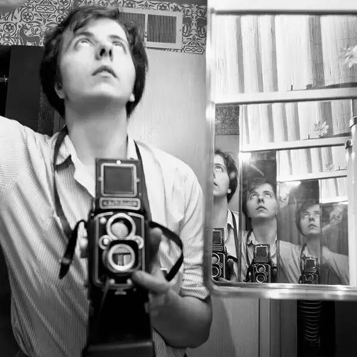

“Well, I suppose nothing is meant to last forever. We have to make room for other people. It’s a wheel. You get on, you have to go to the end. And then somebody has the same opportunity to go to the end and so on.” – Vivian Maier
Vivian Maier (February 1, 1926 – April 21, 2009) was an American street photographer born in New York City. Although born in the U.S., it was in France that Maier spent most of her youth. Maier returned to the U.S. in 1951 where she took up work as a nanny and care-giver for the rest of her life. In her leisure however, Maier had begun to venture into the art of photography. Consistently taking photos over the course of five decades, she would ultimately leave over 100,000 negatives, most of them shot in Chicago and New York City. Vivian would further indulge in her passionate devotion to documenting the world around her through homemade films, recordings and collections, assembling one of the most fascinating windows into American life in the second half of the twentieth century.
薇薇安·迈尔（Vivian Maier），1926年2月1日出生于美国纽约，美国业余街头摄影师、家庭保姆。薇薇安是法国人后裔，出生在纽约，但在法国长大，后回到美国先后生活在纽约和芝加哥，她一生拍摄了超过10万张照片。2007年，芝加哥当地历史学家约翰·马鲁夫发现了她的大量底片并开始整理，此后她的作品登上美国以至意大利、阿根廷和英国等地的报纸。2009年4月21日病逝于芝加哥。2010年，薇薇安的作品开始在芝加哥进行展出，成为摄影圈中热议的人物，并被认可为美国当代最重要的街头摄影师之一。
